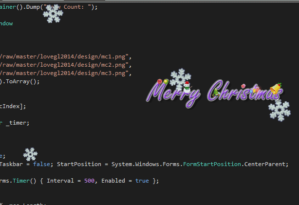
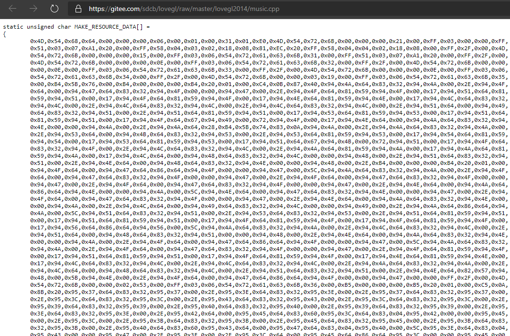

原文连接:https://www.cnblogs.com/sdflysha/p/20191225-merry-christmas-by-dotnet.html
用.NET做圣诞节音乐盒
我曾经用这个程序送给我女朋友（现老婆）😊……首先来看一下最终运行效果：

（当然还有一首《We wish you Merry Christmas》的八音盒BGM，但由于gif的关系，你们可能听不到。）
雪花是怎么做的？
首先本文将着重讲解代码，因此所有的资源都将在运行时下载，雪的的资源是从“码云”下载的，地址如下：https://gitee.com/sdcb/lovegl/raw/master/lovegl2014/icon1.ico
其显示效果如下：

那么是怎么让其旋转起来的呢？我写了一个Snow类，用来表示雪花：
class Snow
{
readonly static string _snow = LoadUrlAsTempFile("https://gitee.com/sdcb/lovegl/raw/master/lovegl2014/icon1.ico");
public Guid Id { get; set; } = Guid.NewGuid();
public float Direction { get; set; }
public float RotationAngle { get; set;}
public float Scale { get; set; }
public float Speed { get; set; }
public float AngularSpeed { get; set;}
public float X { get; set;}
public float Y { get; set;}
public bool IsOffScreen
=> X < -50 || X > RenderWindow.Width + 50 || Y > RenderWindow.Height + 50;
public RenderWindow RenderWindow { get; set; }
}注意它存储了雪花的坐标X、Y、放大比例Scale、注意我并没有使用矢量类型Vector2，因此速度描述拆分成了角速度AngularSpeed、线速度Speed、当前的旋转角RotationAngle和运行方向Direction几个变量。另外还有一个帮助属性IsOffScreen用于判断雪花是否仍然在屏幕上。
雪花运行时，我通过一个Update函数来控制这些属性的变化：
public void Update(RenderTimer timer)
{
var dt = (float)timer.DurationSinceLastFrame.TotalSeconds;
X += (float)(Speed * Math.Sin(Direction) * dt);
Y += (float)(Speed * Math.Cos(Direction) * dt);
RotationAngle += AngularSpeed * dt;
}然后通过一个矩阵变换，即可完成雪花的平衡、缩放和旋转：
public void Draw(BitmapManager bmp, RenderTarget ctx)
{
ctx.Transform =
Matrix3x2.Translation(-24, -24) *
Matrix3x2.Rotation(RotationAngle) *
Matrix3x2.Scaling(Scale) *
Matrix3x2.Translation(X, Y);
ctx.DrawBitmap(bmp[_snow], 1.0f, BitmapInterpolationMode.Linear);
}注意第一个-24，指的是先平衡到雪花的中心间(-24, -24)，然后再依次旋转、缩放和平移。
最后，还需要一个函数，用于随机在屏幕上生成不同大小、不同方向、不同线速度、不同角速度的雪花：
static Random r = new Random();
public static Snow CreateRandom(RenderWindow renderWindow)
{
return new Snow
{
Direction = r.NextFloat(-30, 30) * (float)Math.PI / 180,
Scale = r.NextFloat(0.5f, 1.2f),
Speed = r.NextFloat(80, 100),
AngularSpeed = r.NextFloat(-120, 120) * (float)Math.PI / 180,
X = r.NextFloat(50, renderWindow.Width - 50),
Y = -50,
RenderWindow = renderWindow,
};
}音乐是怎么播放的？
音乐也是从“码云”上下载的，当初搞C++版的时间为了节省资源文件，音乐部分我做成了一个代码文件，该文件地址如下：https://gitee.com/sdcb/lovegl/raw/master/lovegl2014/music.cpp
它的本质是一个.mid文件。解析一个C++文件可能很复杂，但细一看，会发现这个C++文件很有规律：

除了第一行那个声明外，里面的资源都是一个个的字节字面量，因此可以使用C#的LINQ和定则表达式不费吹灰之力即可将其解析出来：
static string GetMusicPath()
{
var url = "https://gitee.com/sdcb/lovegl/raw/master/lovegl2014/music.cpp";
$"Loading {url}...".Dump();
var musicBytes = Util.Cache(() =>
{
var resp = httpClient.GetAsync(url).Result;
var content = resp.Content.ReadAsStringAsync().Result;
return Regex.Matches(content, @"0x([\dA-F]{2})")
.Cast<Match>()
.Select(x => byte.Parse(x.Groups[1].Value, NumberStyles.HexNumber))
.ToArray();
}, url);
var path = Path.GetTempPath() + "merry-christmas.mid";
File.WriteAllBytes(path, musicBytes);
return path;
}最后通过Windows API的mciSendString函数，将其播放：
[DllImport("winmm.dll")]
private static extern long mciSendString(string Cmd, StringBuilder StrReturn, int ReturnLength, IntPtr HwndCallback);
// ...
void Initialize()
{
_musicPath = GetMusicPath();
$"open music: {_musicPath}...".Dump();
mciSendString($"open {_musicPath} type sequencer alias music", null, 0, Handle);
}注意通过mciSendString播放的音乐在播放完成后，并不像.NET API返回一个Task这样方便，而是通过发送一个MM_MCINOTIFY的窗体事件，因此需要多花几行代码搞定循环播放这件事：
void PlayMusic()
{
$"play music: {_musicPath}...".Dump();
mciSendString($"play music from 0 notify", null, 0, Handle);
}
protected override void WndProc(ref Message m)
{
base.WndProc(ref m);
const int MM_MCINOTIFY = 953;
if (m.Msg == MM_MCINOTIFY)
{
PlayMusic();
}
}最后，循环播放的圣诞彩灯
以防没人注意到，我先来个特写（注意那三个灯是旋转播放的）：
这实际上是由三张图片组成：
readonly string[] _mcs = new[]
{
"https://gitee.com/sdcb/lovegl/raw/master/lovegl2014/design/mc1.png",
"https://gitee.com/sdcb/lovegl/raw/master/lovegl2014/design/mc2.png",
"https://gitee.com/sdcb/lovegl/raw/master/lovegl2014/design/mc3.png",
}.Select(x => LoadUrlAsTempFile(x)).ToArray();
int _mcIndex = 0;
public string CurrentMc => _mcs[_mcIndex];要定期循环播放，我定义了一个Timer，定时500毫秒，然后修改当前显示的图片索引即可：
readonly System.Windows.Forms.Timer _timer;
public MerryChristmas()
{
// ...
_timer = new System.Windows.Forms.Timer() { Interval = 500, Enabled = true };
_timer.Tick += (o, args) =>
{
_mcIndex = (_mcIndex + 1) % _mcs.Length;
};
}然后渲染时，显示为“当前”的那张图片：
protected override void OnDraw(DeviceContext ctx)
{
ctx.Clear(Color.Transparent);
ctx.DrawBitmap(XResource.Bitmaps[CurrentMc], 1.0f, InterpolationMode.Linear);
}至于为何它也能拖拽，因为我取了个巧，这里我创建了两个窗口，让这个整个窗口显示Merry Christmas的图片，然后使之可以拖拽即可：
DragMoveEnabled = true;总结
其实这并不是我的发明，这个早在我上大学时Windows XP时代就看到过，我的大学室友都觉得它很炫酷，于是我进行了很久很久的探索。
最开始的时候，我使用WPF对其进行了“仿制”，通过WPF中的AllowsTransparency = true来达到屏幕透明的效果。但其性能低下，CPU使用率往往徘徊在13%左右（单核100%）。
后来我了解到Direct2D以及UpdateLayeredWindowIndirect方法，所以我立即用C++再对这个程序进行了重制。CPU使用率降低至0%。C++代码已在5年前开源在“码云”（这个也是我当年送给我女朋友的版本）：https://gitee.com/sdcb/lovegl/
再后来……直到最近，.NET革命再次爆发，我又拿起了最拿手的C#，基于我做的FlysEngine再次对其进行了重制。这次重制的原则是对新手友好，因此代码尽可能简短，一个文件搞定，不要用项目，因此所有资源文件都是运行时从“码云”下载。
说了这么多，我也曾对这个最早的、别人写的这个程序进行了一定的研究，我发现他并没有使用Direct2D，而是用的最简单的GDI和多窗口模式，每个雪花都是一个窗口。然后它的定时器时间设得比较长，因此雪花旋转并不像我的这样平滑，因此他的那个程序也能在保持CPU使用率相对较低的同时确保用户体验。
福利：所有这些可运行、完整的代码，都可以在我的Github博客数据上进行下载：https://github.com/sdcb/blog-data/tree/master/2019/20191225-merry-christmas-by-dotnet
应很多朋友建议，我把该程序编译了一个二进制版本，各位可以自行下载运行（没有病毒）：链接: https://pan.baidu.com/s/15J6o1FLaWSUGEVrEsb0YXw 提取码: 6mpr
喜欢的朋友 请关注我的微信公众号：【DotNet骚操作】
最后，祝大家圣诞节快乐！😊